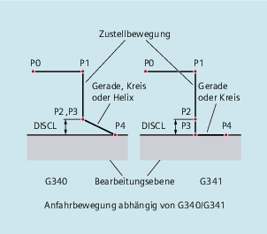
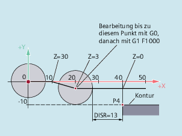
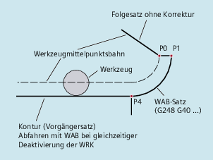
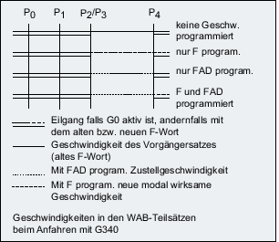
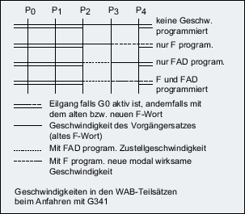
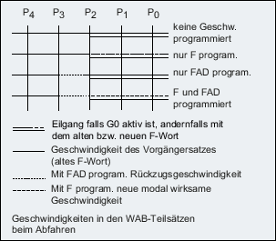

Die Wahl der An- bzw. Abfahrkontur erfolgt mit dem entsprechenden G-Befehl aus der 2. G-Gruppe:
G147: | Anfahren mit einer Geraden |
G247: | Anfahren mit einem Viertelkreis |
G347: | Anfahren mit einem Halbkreis |
G148: | Abfahren mit einer Geraden |
G248: | Abfahren mit einem Viertelkreis |
G348: | Abfahren mit einem Halbkreis |
Anfahrbewegungen bei gleichzeitiger Aktivierung der Werkzeugradiuskorrektur
Bestimmung der An- und Abfahrrichtung mit Hilfe der Werkzeugradiuskorrektur (G140, Grundeinstellung) bei positivem Werkzeugradius:
G41 aktiv → Anfahren von links
G42 aktiv → Anfahren von rechts
Weitere Anfahrmöglichkeiten sind mit G141, G142 und G143 gegeben.
Diese G-Befehle sind nur dann von Bedeutung, wenn die Anfahrkontur ein Viertel- oder Halbkreis ist.
Die Bewegungen setzen sich in jedem Fall aus einer oder mehreren Geraden sowie abhängig vom G-Befehl zur Bestimmung der Anfahrkontur aus einer weiteren Geraden bzw. einem Viertel- oder Halbkreis zusammen. Die 2 Varianten der Wegaufteilung sind in folgendem Bild dargestellt:
G340: | Anfahren mit einer Geraden vom Punkt P0 zum Punkt P1. Diese Gerade ist parallel zur Bearbeitungsebene, wenn der Parameter DISRP nicht programmiert wurde. Senkrecht zur Bearbeitungsebene vom Punkt P1 zum Punkt P3 zustellen auf den durch den Parameter DISCL definierten Sicherheitsabstand zur Bearbeitungsebene. Anfahren des Endpunkts P4 mit der durch den G-Befehl der zweiten Gruppe bestimmten Kurve (Gerade, Kreis, Helix). Ist G247 oder G347 aktiv (Viertel- oder Halbkreis) und der Startpunkt P3 liegt nicht in der durch den Endpunkt P4 definierten Bearbeitungsebene, wird statt eines Kreises eine Helix eingefügt. Der Punkt P2 ist nicht definiert bzw. er fällt mit P3 zusammen. Die Kreisebene bzw. die Helixachse wird dabei durch die in im WAB-Satz aktive Ebene (G17/G18/G19) bestimmt, d. h. vom Folgesatz wird nicht die Starttangente selbst zur Bestimmung des Kreises verwendet, sondern deren Projektion in die aktive Ebene. Die Bewegung vom Punkt P0 zum Punkt P3 erfolgt in zwei Geraden mit der Geschwindigkeit, die vor dem WAB-Satz wirksam war. |
G341: | Anfahren mit einer Geraden vom Punkt P0 zum Punkt P1. Diese Gerade ist parallel zur Bearbeitungsebene, wenn der Parameter DISRP nicht programmiert wurde. Senkrecht zur Bearbeitungsebene vom Punkt P1 bis zu dem durch den Parameter DISCL definierten Sicherheitsabstand zur Bearbeitungsebene im Punkt P2 zustellen. Senkrecht zur Bearbeitungsebene vom Punkt P2 zum Punkt P3 zustellen. Anfahren des Endpunkts mit der durch den G-Befehl der zweiten Gruppe bestimmten Kurve. P3 und P4 liegen in der Bearbeitungsebene, so dass bei G247 bzw. G347 nie eine Helix, sondern immer ein Kreis eingefügt wird. |
In allen Fällen, in denen die Lage der aktiven Ebene G17/G18/G19 eingeht (Kreisebene, Helixachse, Zustellbewegungen senkrecht zur aktiven Ebene), wird ein eventuell aktiver drehender Frame berücksichtigt.
An-/Abfahren mit Geraden
DISR gibt den Abstand der Fräserkante vom Startpunkt der Kontur an, d. h. die Länge der Geraden ergibt sich bei aktiver WRK als Summe von Werkzeugradius und programmiertem Wert von DISR. Der Werkzeugradius wird nur berücksichtigt, wenn er positiv ist.
Die resultierende Geradenlänge muss positiv sein, d. h. es sind negative Werte für DISR zulässig, solange der Betrag von DISR kleiner als der Werkzeugradius ist.
An-/Abfahren mit Kreisen
DISR gibt den Radius der Werkzeugmittelpunktsbahn an. Ist WRK aktiviert, wird ein Kreis mit einem solchen Radius erzeugt, dass auch in diesem Fall die Werkzeugmittelpunktsbahn mit dem programmierten Radius resultiert.
Soll die Position des Punkts P2 auf der Achse senkrecht zur Kreisebene absolut angegeben werden, ist der Wert in der Form DISCL=AC(...) zu programmieren.
Bei DISCL=0 gilt:
Bei G340: Die gesamte Anfahrbewegung besteht nur noch aus zwei Sätzen (P1, P2 und P3 fallen zusammen). Die Anfahrkontur wird von P1 zu P4 gebildet.
Bei G341: Die gesamte Anfahrbewegung besteht aus drei Sätzen (P2 und P3 fallen zusammen). Liegen P0 und P4 in der gleichen Ebene entstehen nur zwei Sätze (Zustellbewegung von P1 nach P3 entfällt).
Es wird überwacht, dass der durch DISCL definierte Punkt zwischen P1 und P3 liegt, d. h. bei allen Bewegungen, die eine Komponente senkrecht zur Bearbeitungsebene haben, muss diese Komponente das gleiche Vorzeichen haben.
Bei der Erkennung der Richtungsumkehr wird eine durch das Maschinendatum MD20204 $MC_WAB_CLEARANCE_TOLERANCE definierte Toleranz zugelassen.
Soll die Position des Punkts P1 auf der Achse senkrecht zur Bearbeitungsebene absolut angegeben werden, ist der Wert in der Form DISRP=AC(...) zu programmieren.
Ist dieser Parameter nicht programmiert, hat der Punkt P1 den gleichen Abstand von der Bearbeitungsebene wie der Punkt P0, d. h die Anfahrgerade P0 → P1 ist parallel zur Bearbeitungsebene.
Es wird überwacht, dass der durch DISRP definierte Punkt zwischen P0 und P2 liegt, d. h. bei allen Bewegungen, die eine Komponente senkrecht zur Bearbeitungsebene haben (Zustellbewegungen, Anfahrbewegung von P3 nach P4) muss diese Komponente das gleiche Vorzeichen haben. Eine Richtungsumkehr ist nicht zugelassen. Gegebenenfalls wird ein Alarm ausgegeben.
Bei der Erkennung der Richtungsumkehr wird eine durch das Maschinendatum MD20204 $MC_WAB_CLEARANCE_TOLERANCE definierte Toleranz zugelassen. Liegt P1 außerhalb des durch P0 und P2 definierten Bereichs, ist die Abweichung jedoch kleiner oder gleich dieser Toleranz, wird angenommen, dass P1 in der durch P0 bzw. P2 definierten Ebene liegt.
Der Endpunkt wird in der Regel programmiert mit X... Y... Z...
Die Programmierung des Konturendpunkts beim Anfahren unterscheidet sich wesentlich von der beim Abfahren. Die beiden Fälle werden deshalb hier getrennt behandelt.
Programmierung des Endpunktes P4 beim Anfahren
Der Endpunkt P4 kann im WAB-Satz selbst programmiert sein. Alternativ dazu besteht die Möglichkeit, P4 durch den Endpunkt des nächsten Verfahrsatzes zu bestimmen. Zwischen WAB-Satz und nächsten Verfahrsatz können weitere Sätze ohne Bewegung der Geometrieachsen eingefügt werden.
Beispiel:
| Programmcode | Kommentar |
|---|---|
| $TC_DP1[1,1]=120 | ; Fräserwerkzeug T1/D1 |
| $TC_DP6[1,1]=7 | ; Werkzeug mit 7 mm Radius |
| N10 G90 G0 X0 Y0 Z30 D1 T1 | |
| N20 X10 | |
| N30 G41 G147 DISCL=3 DISR=13 Z=0 F1000 | |
| N40 G1 X40 Y-10 | |
| N50 G1 X50 | |
| ... |
N30/N40 kann ersetzt werden durch:
bzw.
N30 G41 G147 DISCL=3 DISR=13 F1000N40 G1 X40 Y-10 Z0 Programmierung des Endpunktes P0 beim Abfahren
Beim Abfahren ist die Programmierung des Endpunkts der WAB-Kontur in einem Folgesatz nicht vorgesehen, d. h. die Endposition wird immer aus dem WAB-Satz selbst entnommen, unabhängig davon wie viele Achsen programmiert wurden. Bei der Bestimmung des Endpunkts sind dabei die folgenden drei Fälle zu unterscheiden:
Im WAB-Satz ist keine Geometrieachse programmiert. Die Kontur endet in diesem Fall im Punkt P1 (falls DISRP programmiert ist), im Punkt P2 (falls DISCL aber nicht DISRP programmiert ist) oder im Punkt P3 (falls weder DICLS noch DISRP programmiert ist).
Die Position in den Achsen, die die Bearbeitungsebene bilden, ergibt sich aus der Wegfahrkontur (Endpunkt der Geraden bzw. des Kreises). Die Achskomponente senkrecht dazu wird durch DISCL bzw. DISPR definiert. Ist in diesem Fall sowohl DISCL=0 als auch DISRP=0, verläuft die Bewegung deshalb vollständig in der Ebene, d. h. die Punkt P0 bis P3 fallen zusammen.
Im WAB-Satz ist nur die Achse senkrecht zur Bearbeitungsebene programmiert. Die Kontur endet in diesem Fall im Punkt P0. Falls DISRP programmiert ist (d. h. die beiden Punkte P0 und P1 fallen nicht zusammen), verläuft die Gerade P1 → P0 senkrecht zur Bearbeitungsebene. Die Positionen der übrigen beiden Achsen ergeben sich wie unter 1.
Es ist mindestens eine Achse der Bearbeitungsebene programmiert. Die eventuell fehlende zweite Achse der Bearbeitungsebene wird aus ihrer letzten Position im Vorgängersatz modal ergänzt.
Die Position der Achse senkrecht zur Bearbeitungsebene wird – abhängig davon, ob diese Achse programmiert ist oder nicht – wie unter 1. oder 2. gebildet. Die so gebildete Position definiert den Endpunkt P0. Ist der WAB-Abfahrsatz gleichzeitig der Deaktivierungssatz der Werkzeugradiuskorrektur, so wird in den ersten beiden Fällen eine zusätzliche Wegkomponente in der Bearbeitungsebene von P1 nach P0 derart eingefügt, dass sich bei der Deaktivierung der Werkzeugradiuskorrektur am Ende der Wegfahrkontur keine Bewegung ergibt, d. h. dieser Punkt definiert dann nicht eine Position auf einer zu korrigierenden Kontur, sondern den Werkzeugmittelpunkt. Im Fall drei muss die Abwahl der Werkzeugradiuskorrektur nicht gesondert behandelt werden, da der programmierte Punkt P0 bereits unmittelbar die Position des Werkzeugmittelpunkts am Ende der Gesamtkontur definiert.
Das Verhalten in den Fällen 1 und 2, d. h. bei nicht explizit programmiertem Endpunkt in der Bearbeitungsebene bei gleichzeitiger Abwahl der Werkzeugradiuskorrektur, ist in folgendem Bild dargestellt:
Geschwindigkeit des Vorgängersatzes (G0)
Mit dieser Geschwindigkeit werden alle Bewegungen von P0 bis zu P2 ausgeführt, d. h. die Bewegung parallel zur Bearbeitungsebene und der Teil der Zustellbewegung bis zum Sicherheitsabstand.
Programmierung mit FAD
Angabe der Vorschubgeschwindigkeit bei
G341: Zustellbewegung senkrecht zur Bearbeitungsebene von P2 nach P3
G340: von Punkt P2 bzw. P3 zum P4
Wird FAD nicht programmiert, wird dieser Teil der Kontur ebenfalls mit der modal wirksamen Geschwindigkeit des Vorgängersatzes, falls im WAB-Satz kein F-Wort programmiert ist, verfahren.
Programmierter Vorschub F
Dieser Vorschubwert ist ab P3 bzw. P2 wirksam, falls FAD nicht programmiert ist. Wird im WAB-Satz kein F-Wort programmiert, wirkt die Geschwindigkeit des Vorgängersatzes.
Beispiel:
| Programmcode | Kommentar |
|---|---|
| $TC_DP1[1,1]=120 | ; Fräserwerkzeug T1/D1 |
| $TC_DP6[1,1]=7 | ; Werkzeug mit 7mm Radius |
| N10 G90 G0 X0 Y0 Z20 D1 T1 | |
| N20 G41 G341 G247 DISCL=AC(5) DISR=13 FAD 500 X40 Y-10 Z=0 F200 | |
| N30 X50 | |
| N40 X60 | |
| ... |
Beim Abfahren sind die Rollen von modal wirksamem Vorschub aus dem Vorgängersatz und dem im WAB-Satz programmierten Vorschubwert vertauscht, d. h. die eigentliche Abfahrkontur wird mit dem alten Vorschub verfahren, eine neu mit F-Wort programmierte Geschwindigkeit gilt entsprechend ab P2 bis zum P0.
  Die Punkte P3 und P4 können beim Anfahren als Systemvariable im WKS gelesen werden.
$P_APR: Lesen von P
3 (Aufstartpunkt)
$P_AEP: Lesen von P
4 (Konturanfangspunkt)
$P_APDV: Lesen, ob $P_APR und $P_AEP gültige Werte enthalten